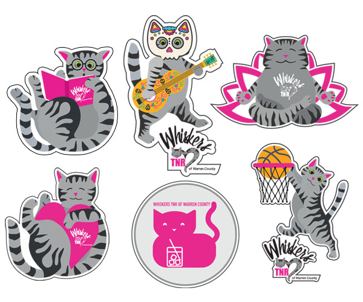

Branding Graphic design Print
Stickers make a great cheap purchase at events, so natually Whiskers needed specialty stickers for our on-going and one-time events. Keeping with the "Whiskers Kitty" theme, he's gone to basketball games, Caturdays at the library, kitten yoga and the annual fundraiser, the Meow Mixer.